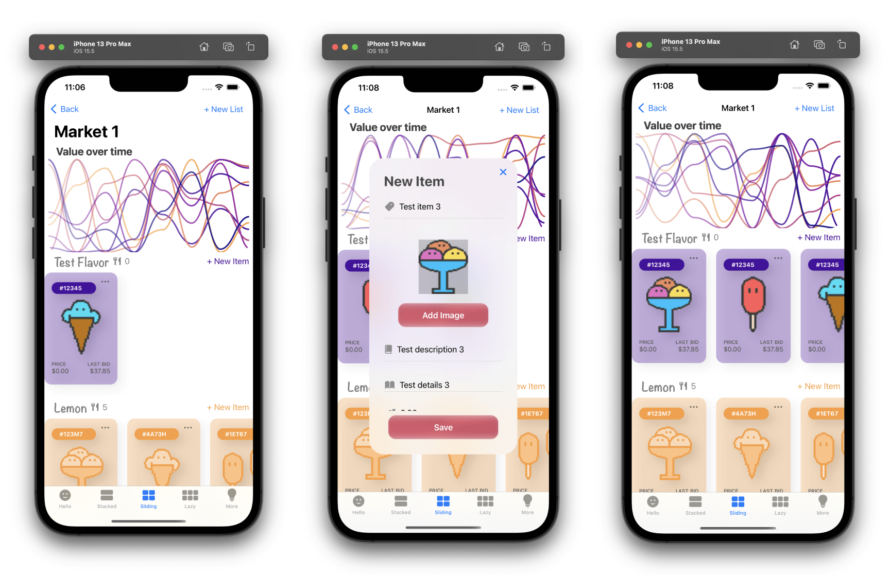

SwiftUI. In an ideal world, how do you want to view your data?
Introduction
Dessert Marketplace
In this project, I plugged an NFT-style data model and data set into a SwiftUI design system. The demonstrator supplied the data and control logic that brings the design system to life even as a living and testable product that supports complex user flows and information architecture. This demonstrator will be extremly handy for designing my upcoming productivity app.
In this Swift User Interface, we can reconfigure and test:
- 2 color sets
- 6 layouts for viewing and exploring information
- 3 different UI textures
and each permutation resides in the same app. The User Interface is available for public testing on iOS here
This can be used for any application. Think of all those times you spend with excel sheets and tables in your own work. How can this experience be improved? In an ideal world, how would you want to view your data?
UI Frameworks for native app development
Native Apps provide the best user experience, especially when accessing hardware and harnessing features such as AR. Native development is known to be expensive but the modern declarative frameworks such as SwiftUI for iOS and Jetpack Compose for Android make it building beautiful high quality user interfaces and apps more efficient.
In addition, KMP seems like a promising architecture where the SwiftUI or Jetpack Compose UI views can be driven by the same backend and logic. Just a note, this is a very simplified explanation of KMP. I am not a KMP expert so I won’t go further into this :D
Using Data in First Prototype
Market Structure
The data structure is very simple. It allows us to make multiple markets, where each market can have a set of flavors and each flavor can have a set of desserts.The data set really helps to bring the prototype to life while designing the user interface. We are able to see how the data appears on different textures
- Flat
- Neumorphic
- Glass
We can test things such as accessibility and obsrve how users feel when they interact with different textures.
Data Set
A large set of sample data is used to provide a prototyping data set that can be accessed by all of the views. For prototyping, I created an ObservableObject class with a dataset that uses the @Published property wrapper. It is called ObservableObject because SwiftUI monitors the ObservableObject which in turn will announces when changes to the data set occur.
This was a lot of copy to write and in making this I have learned a lot of fun facts about fruits and desserts :D
Icons
This is the first iteration of icons for each flavor (created in Figma). There is still more work to be done in order to make them look more consistent and like a family.
Warm color flavors
Lemon, Orange, Watermelon, Strawberry, Dragon Fruit, Plum, Raspberry, Blueberry
This layout allows one to see, for one market, how many desserts there are for each flavor and a description of each flavor.
Cool color flavors
Avocado, Lime, Apple, Mint, Elderberry, Concord Grape, Lavendar, Blackberry
Desserts
I created the pixel desserts in Figma. They are not the greatest but were quick to make and kind of cute.
- Sorbet
- Ice Cream
- Crushed Ice
- Doughnuts
- Crushed Ice
- Smoothie
- Candy
- Cake
Figma is actually not an optimal tool for making pixel art but throughout these projects I have been accumulating too many tools and subscriptions so I decide to cut down.
For the prototype data set, I kept things simple and used the same set of desserts for each flavor.

Exploring the Entire Market
The carousel allows you to visualize and explore, on one screen, all fruits within each flavor for one market. This was the most complicated layout to implement because it contained data and nested scroll views with headers.
This view will also allow the user to add new desserts to any flavor. This is discussed in more detail at the very end.
Lazy Grid
This layout allows the user to explore the desserts within one specific flavor using the lazy grid.
As hopefully noticed by now :), I have been switching between a warm and cool color palette. It is well known that warm colors tend to appear closer while cool colors appear more distant and mixing warm with cool (e.g. red and blue) can create a strong emotional response.
Title
Screenshot 2
Title
Screenshot 7
Title
Screenshot 8A

Screenshot 8B
